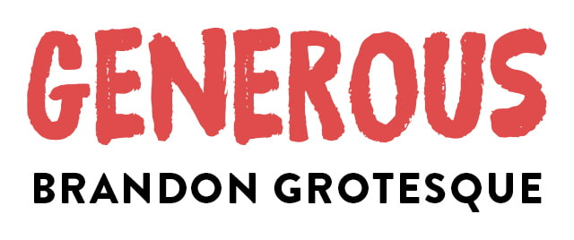

Long before I wrote my first line of code, all I wanted to do was make music. I went to a music-focused high school, played in a couple of bands, and I loved it.
I also loved making flyers, posters and CD artwork for local bands - It’s actually what got me started in design and ultimately led me to build for the web. You see I can’t really draw, so my only option to create the images in my head was with the help of computers, which I was able to use. Creating posters became a hobby of mine.
These days, I’m usually too busy to find time for that hobby. But I keep a collection of my favourite gigposters and once in a while, when an occasion arises, I get to do one myself.
I still do vocals in one band, and so fortunately that occasion comes once a year in the form of a Rage Against the Machine cover gig we play in my hometown. The event is called “Rage/Aid” because all of the proceeds are donated to charity.
TL;DR: Here’s the poster I did for that show, and how I made it.
Concept
The hardest part for me is coming up with a good idea. Much like a website, a gigposter is a mixture of information and art - and should be tailored to the general vibe of the band/show. That being said, there really are no rules as to which motives fit which genre. You get to freely explore different ideas and concepts.
I usually start with a few crudely-drawn pencil sketches of possible motives. Just shoot these out real quick and let your mind wander - you can care about making them look good later. You can get inspiration from anywhere: art, nature, architecture, movies… whatever captures your attention.
For this one, I liked the idea of referencing a famous painting, “The Son of Man” by René Magritte. It’s the one with the apple in front of a man’s face - you might know it.
I thought I could take the concept of the faceless, anonymous person and put a twist on it. I also knew I wanted fire in there somehow to symbolize Rage against the Machine’s anger and spirit of revolution, so I drew a lit match instead of the apple.
It really doesn’t have to be clever or deep or anything though, it’s a fucking poster, not an arts degree. 🧐 I just liked the visual and thought it would go well with the vibe, so that’s what I used.
Illustration
As I mentioned earlier, I can’t draw for shit. There are some insanely talented poster artists out there that do it all by hand and I greatly admire their skill - but I have to rely on digital trickery to make my stuff look good.
So I took to a stock photo site to find something I could base my illustration on. After some searching, I came across this series of backlit faces that seemed like a nice fit.
I like to have the main motive as a vector drawing because that’s just easier to work with. I can tweak certain parts or recolor it later without too much trouble. Plus if I need it on the side of a bus someday, I can always scale it up. So my first step is usually to get the motive vectorized.
I opened the stock photo in Illustrator and began tracing the outline with the pen tool. I also separated the colors into three layers, from dark to light. This sort of thing is common in stencil or screenprint artwork, and I wanted to recreate that style. It works best on high-contrast images like this.
I played around with different filters and effects to give the silhouette shape more detail. The one I chose is the halftone filter: it transforms the shapes into thousands of “print dots”. The size and density of these dots then determine the lightness.
This breaks a bit with the stencil style, but I like how it blends the edges of the three color layers together, and it reminds me of old newspapers and billboards.
For the match, I googled for a random picture as a base, applied a treshold and vectorized it in Illustrator. The flame is just a doodle I made with the pen tool, with a few extra points and distortion added to make the edges more jagged. The zigzag filter can help with that.
Putting the main motive together already looks cool; the flame fits nicely inside the silhouette shape. Good enough for now - I’ll let that sit for a while and work on other stuff.
Background
For the background, I switched to Photoshop as it’s pixel-based. It’s important to work in CMYK colors here and make sure the document is at least 300dpi, large enough for the intended poster size - it’s a pain to scale pixel artwork up later on.
I started with a flat color and then progressively layered other stuff on top to give it more detail. The base here was a bright red.
I then used a watercolor texture, a bit of speckle/noise and a grunge brush to make it look more eroded. I was going for a screenprint-like style, where the color often doesn’t distribute evenly across the paper and has these interesting imperfections. The nice thing about blending these layers together in Photoshop is that you can still easily tweak the base color afterwards and try out different color schemes.
Another trick I like is to give the artwork a “frame”, again to make it look a bit more handmade:
This is just an extra mask layer, where the sides are drawn with a paintroller brush that gives you these nice rough edges. These are small details, but they all add to the general look and feel of the poster.
Typography
Gigposters let you get really creative with type. There are some awesome pieces that use crazy custom letterforms and make them a part of the artwork itself. For my poster, I just wanted something simple that matched the illustration style.
I found this nice big brush font called “Generous” by Danish type foundry PizzaDude. It has broad strokes and rough edges that go well with the background, and work nicely as the display font. I paired it with the clean sans-serif Brandon Grotesque for the body copy.
There are some other pieces of information that just have to be on there, like the date and venue. Rather than doing one big text block though, I like to break these up a bit and play with ways to integrate them into the artwork.
I put the supporting act in a separate badge to make it stand out more, and I made a little cutaway in the frame to hold the venue logo.
Getting to Print
Colors always look different on screen than in print. A piece of paper doesn’t glow, so they are usually a bit darker and less saturated in CMYK. To make sure they turn out right, you can proof your work before you send it off. If you know your color profile, Photoshop can simulate how colors will look in print.
A color profile is a bit of data that sets things like the color space, maximum ink application and other instructions for the printer. My local printer for example uses one called “ISO Coated v2 300%” (print companies will usually tell you which profile to use on their website). You can download and install these for free.
After everything is ready, I import the poster without all the type and vector elements into InDesign, then add them back in there. That way they’ll actually end up in the final PDF as vectors and are guaranteed to look sharp. InDesign also lets you set things like bleed and crop marks, which are sometimes required by the printer.
Final Result
And here’s the whole thing put together (click for full PDF):